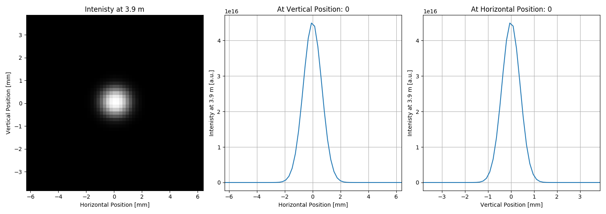

Note
Click here to download the full example code
SRW Example #15¶
Problem¶
The example was created by Timur Shaftan (BNL) for RadTrack project (https://github.com/radiasoft/radtrack). Adapted by Maksim Rakitin (BNL). The purpose of the example is to demonstrate good agreement of the SRW simulation of propagation of a gaussian beam through a drift with an analytical estimation.
Example Solution¶

- 
Out:
SRWLIB Python Example # 15:
Calculating propagation of a gaussian beam through a drift and comparison with the analytical calculation.
z xFWHM yFWHM nx ny xStart yStart
0.3 0.002501 0.004361 64 78 -0.0063446154 -0.0071739130
0.6 0.002311 0.004017 64 72 -0.0063446154 -0.0066149068
0.9 0.002130 0.003674 64 66 -0.0064772370 -0.0060559006
1.2 0.001964 0.003334 90 60 -0.0063736264 -0.0054968944
1.5 0.001807 0.002996 96 54 -0.0063446154 -0.0049378882
1.8 0.001667 0.002661 96 48 -0.0063446154 -0.0043788820
2.1 0.001546 0.002335 64 44 -0.0066153846 -0.0040062112
2.4 0.001457 0.002021 78 42 -0.0064461538 -0.0038198758
2.7 0.001399 0.001724 78 42 -0.0064461538 -0.0038198758
3.0 0.001378 0.001444 78 54 -0.0064461538 -0.0038252508
3.3 0.001399 0.001197 78 78 -0.0064461538 -0.0038310559
3.6 0.001457 0.001011 78 84 -0.0064461538 -0.0038687888
3.9 0.001545 0.000922 56 54 -0.0063076923 -0.0038252508
4.2 0.001662 0.000959 56 54 -0.0063076923 -0.0038252508
4.5 0.001804 0.001112 56 54 -0.0063076923 -0.0038252508
4.8 0.001965 0.001340 42 42 -0.0063076923 -0.0038198758
5.1 0.002131 0.001604 42 42 -0.0063076923 -0.0038198758
5.4 0.002316 0.001899 42 42 -0.0063076923 -0.0038198758
5.7 0.002500 0.002206 42 42 -0.0063076923 -0.0038198758
6.0 0.002689 0.002531 42 48 -0.0063076923 -0.0043788820
Exit
from __future__ import print_function
import srwpy.uti_plot as uti_plot
from srwpy.srwlib import *
from srwpy.uti_math import matr_prod, fwhm
print('SRWLIB Python Example # 15:')
print('Calculating propagation of a gaussian beam through a drift and comparison with the analytical calculation.')
#************************************* Create examples directory if it does not exist
example_folder = 'data_example_15'
if not os.path.isdir(example_folder):
os.mkdir(example_folder)
#************************************* Auxiliary functions
def AnalyticEst(PhotonEnergy, WaistPozition, Waist, Dist):
"""Perform analytical estimation"""
Lam = 1.24e-6 * PhotonEnergy
zR = 3.1415 * Waist ** 2 / Lam
wRMSan = []
for l in range(len(Dist)):
wRMSan.append(1 * Waist * sqrt(1 + (Lam * (Dist[l] - WaistPozition) / 4 / 3.1415 / Waist ** 2) ** 2))
return wRMSan
def BLMatrixMult(LensMatrX, LensMatrY, DriftMatr, DriftMatr0):
"""Computes envelope in free space"""
InitDriftLenseX = matr_prod(LensMatrX, DriftMatr0)
tRMSfunX = matr_prod(DriftMatr, InitDriftLenseX)
InitDriftLenseY = matr_prod(LensMatrY, DriftMatr0)
tRMSfunY = matr_prod(DriftMatr, InitDriftLenseY)
return (tRMSfunX, tRMSfunY)
def Container(DriftLength, f_x, f_y):
"""Container definition"""
OpElement = []
ppOpElement = []
OpElement.append(SRWLOptL(_Fx=f_x, _Fy=f_y, _x=0, _y=0))
OpElement.append(SRWLOptD(DriftLength))
ppOpElement.append([1, 1, 1.0, 0, 0, 1.0, 1.0, 1.0, 1.0]) # note that I use sel-adjust for Num grids
ppOpElement.append([1, 1, 1.0, 0, 0, 1.0, 1.0, 1.0, 1.0])
OpElementContainer = []
OpElementContainer.append(OpElement[0])
OpElementContainer.append(OpElement[1])
OpElementContainerProp = []
OpElementContainerProp.append(ppOpElement[0])
DriftMatr = [[1, DriftLength], [0, 1]]
OpElementContainerProp.append(ppOpElement[1])
LensMatrX = [[1, 0], [-1.0 / f_x, 1]]
LensMatrY = [[1, 0], [-1.0 / f_y, 1]]
opBL = SRWLOptC(OpElementContainer, OpElementContainerProp)
return (opBL, LensMatrX, LensMatrY, DriftMatr)
def qParameter(PhotonEnergy, Waist, RadiusCurvature):
"""Computing complex q parameter"""
Lam = 1.24e-6 * PhotonEnergy
qp = (1.0 + 0j) / complex(1 / RadiusCurvature, -Lam / 3.1415 / Waist ** 2)
return qp, Lam
#************************************* 1. Defining Beam structure
GsnBm = SRWLGsnBm() # Gaussian Beam structure (just parameters)
GsnBm.x = 0 # Transverse Coordinates of Gaussian Beam Center at Waist [m]
GsnBm.y = 0
GsnBm.z = 0 # Longitudinal Coordinate of Waist [m]
GsnBm.xp = 0 # Average Angles of Gaussian Beam at Waist [rad]
GsnBm.yp = 0
GsnBm.avgPhotEn = 0.5 # 5000 #Photon Energy [eV]
GsnBm.pulseEn = 0.001 # Energy per Pulse [J] - to be corrected
GsnBm.repRate = 1 # Rep. Rate [Hz] - to be corrected
GsnBm.polar = 1 # 1- linear horizontal
GsnBm.sigX = 1e-03 # /2.35 #Horiz. RMS size at Waist [m]
GsnBm.sigY = 2e-03 # /2.35 #Vert. RMS size at Waist [m]
GsnBm.sigT = 10e-12 # Pulse duration [fs] (not used?)
GsnBm.mx = 0 # Transverse Gauss-Hermite Mode Orders
GsnBm.my = 0
#************************************* 2. Defining wavefront structure
wfr = SRWLWfr() # Initial Electric Field Wavefront
wfr.allocate(1, 100, 100) # Numbers of points vs Photon Energy (1), Horizontal and Vertical Positions (dummy)
wfr.mesh.zStart = 3.0 # Longitudinal Position [m] at which Electric Field has to be calculated, i.e. the position of the first optical element
wfr.mesh.eStart = GsnBm.avgPhotEn # Initial Photon Energy [eV]
wfr.mesh.eFin = GsnBm.avgPhotEn # Final Photon Energy [eV]
firstHorAp = 20.e-03 # First Aperture [m]
firstVertAp = 30.e-03 # [m]
wfr.mesh.xStart = -0.5 * firstHorAp # Initial Horizontal Position [m]
wfr.mesh.xFin = 0.5 * firstHorAp # Final Horizontal Position [m]
wfr.mesh.yStart = -0.5 * firstVertAp # Initial Vertical Position [m]
wfr.mesh.yFin = 0.5 * firstVertAp # Final Vertical Position [m]
DriftMatr0 = [[1, wfr.mesh.zStart], [0, 1]]
#************************************* 3. Setting up propagation parameters
sampFactNxNyForProp = 5 # sampling factor for adjusting nx, ny (effective if > 0)
arPrecPar = [sampFactNxNyForProp]
#************************************* 4. Defining optics properties
f_x = 3e+0 # focusing strength, m in X
f_y = 4e+0 # focusing strength, m in Y
StepSize = 0.3 # StepSize in meters along optical axis
InitialDist = 0 # Initial drift before start sampling RMS x/y after the lens
TotalLength = 6.0 # Total length after the lens
NumSteps = int((TotalLength - InitialDist) / StepSize) # Number of steps to sample RMS x/y after the lens
#************************************* 5. Starting the cycle through the drift after the lens
xRMS = []
yRMS = []
s = []
WRx = []
WRy = []
intensitiesToPlot = { # dict to store intensities and distances to plot at the end
'intensity': [],
'distance': [],
'mesh': [],
'mesh_x': [],
'mesh_y': []
}
# print('z xRMS yRMS mesh.nx mesh.ny xStart yStart')
# print('z xRMS yRMS nx ny xStart yStart') # OC
data_to_print = []
#header = '{:3s} {:8s} {:8s} {:2s} {:2s} {:13s} {:13s}'.format('z', 'xRMS', 'yRMS', 'nx', 'ny', 'xStart', 'yStart') #MR27092016
header = '{:3s} {:8s} {:8s} {:2s} {:2s} {:13s} {:13s}'.format('z', 'xFWHM', 'yFWHM', 'nx', 'ny', 'xStart', 'yStart') #OC18112017
data_to_print.append(header)
print(header)
for j in range(NumSteps):
#********************************* Calculating Initial Wavefront and extracting Intensity:
srwl.CalcElecFieldGaussian(wfr, GsnBm, arPrecPar)
arI0 = array('f', [0] * wfr.mesh.nx * wfr.mesh.ny) # "flat" array to take 2D intensity data
srwl.CalcIntFromElecField(arI0, wfr, 6, 0, 3, wfr.mesh.eStart, 0, 0) # extracts intensity
wfrP = deepcopy(wfr)
#********************************* Selecting radiation properties
Polar = 6 # 0- Linear Horizontal / 1- Linear Vertical 2- Linear 45 degrees / 3- Linear 135 degrees / 4- Circular Right / 5- Circular / 6- Total
Intens = 0 # 0=Single-e I/1=Multi-e I/2=Single-e F/3=Multi-e F/4=Single-e RadPhase/5=Re single-e Efield/6=Im single-e Efield
DependArg = 3 # 0 - vs e, 1 - vs x, 2 - vs y, 3- vs x&y, 4-vs x&e, 5-vs y&e, 6-vs x&y&e
# plotNum = 1000
if InitialDist == 0.0: # plot initial intensity at 0
intensitiesToPlot['intensity'].append(deepcopy(arI0))
intensitiesToPlot['distance'].append(InitialDist)
intensitiesToPlot['mesh_x'].append(deepcopy([wfrP.mesh.xStart, wfrP.mesh.xFin, wfrP.mesh.nx]))
intensitiesToPlot['mesh'].append(deepcopy(wfrP.mesh))
intensitiesToPlot['mesh_y'].append(deepcopy([wfrP.mesh.yStart, wfrP.mesh.yFin, wfrP.mesh.ny]))
InitialDist = InitialDist + StepSize
(opBL, LensMatrX, LensMatrY, DriftMatr) = Container(InitialDist, f_x, f_y)
srwl.PropagElecField(wfrP, opBL) # Propagate E-field
# plotMeshx = [plotNum * wfrP.mesh.xStart, plotNum * wfrP.mesh.xFin, wfrP.mesh.nx]
# plotMeshy = [plotNum * wfrP.mesh.yStart, plotNum * wfrP.mesh.yFin, wfrP.mesh.ny]
plotMeshx = [wfrP.mesh.xStart, wfrP.mesh.xFin, wfrP.mesh.nx]
plotMeshy = [wfrP.mesh.yStart, wfrP.mesh.yFin, wfrP.mesh.ny]
#********************************* Extracting output wavefront
arII = array('f', [0] * wfrP.mesh.nx * wfrP.mesh.ny) # "flat" array to take 2D intensity data
arIE = array('f', [0] * wfrP.mesh.nx * wfrP.mesh.ny)
srwl.CalcIntFromElecField(arII, wfrP, Polar, Intens, DependArg, wfrP.mesh.eStart, 0, 0)
arIx = array('f', [0] * wfrP.mesh.nx)
srwl.CalcIntFromElecField(arIx, wfrP, 6, Intens, 1, wfrP.mesh.eStart, 0, 0)
arIy = array('f', [0] * wfrP.mesh.ny)
srwl.CalcIntFromElecField(arIy, wfrP, 6, Intens, 2, wfrP.mesh.eStart, 0, 0)
if abs(InitialDist - 3.0) < 1e-10 or abs(InitialDist - 3.9) < 1e-10: # plot at these distances
intensitiesToPlot['intensity'].append(deepcopy(arII))
# intensitiesToPlot['distance'].append(InitialDist)
intensitiesToPlot['distance'].append(round(InitialDist, 6)) # OC
intensitiesToPlot['mesh_x'].append(deepcopy(plotMeshx))
intensitiesToPlot['mesh'].append(deepcopy(wfrP.mesh))
intensitiesToPlot['mesh_y'].append(deepcopy(plotMeshy))
x = []
y = []
arIxmax = max(arIx)
arIxh = []
arIymax = max(arIx)
arIyh = []
for i in range(wfrP.mesh.nx):
x.append((i - wfrP.mesh.nx / 2.0) / wfrP.mesh.nx * (wfrP.mesh.xFin - wfrP.mesh.xStart))
arIxh.append(float(arIx[i] / arIxmax - 0.5))
for i in range(wfrP.mesh.ny):
y.append((i - wfrP.mesh.ny / 2.0) / wfrP.mesh.ny * (wfrP.mesh.yFin - wfrP.mesh.yStart))
arIyh.append(float(arIy[i] / arIymax - 0.5))
xRMS.append(fwhm(x, arIxh))
yRMS.append(fwhm(y, arIyh))
s.append(InitialDist)
(tRMSfunX, tRMSfunY) = BLMatrixMult(LensMatrX, LensMatrY, DriftMatr, DriftMatr0)
WRx.append(tRMSfunX)
WRy.append(tRMSfunY)
# print(InitialDist, xRMS[j], yRMS[j], wfrP.mesh.nx, wfrP.mesh.ny, wfrP.mesh.xStart, wfrP.mesh.yStart)
# print(round(InitialDist, 6), round(xRMS[j], 6), round(yRMS[j], 6), wfrP.mesh.nx, wfrP.mesh.ny,
# round(wfrP.mesh.xStart, 10), round(wfrP.mesh.yStart, 10)) # OC
data_row = '{:3.1f} {:8.6f} {:8.6f} {:2d} {:2d} {:12.10f} {:12.10f}'.format(InitialDist, xRMS[j], yRMS[j], wfrP.mesh.nx,
wfrP.mesh.ny, wfrP.mesh.xStart, wfrP.mesh.yStart) #MR27092016
data_to_print.append(data_row)
print(data_row)
#************************************* 6. Analytic calculations
xRMSan = AnalyticEst(GsnBm.avgPhotEn, wfr.mesh.zStart + s[0], GsnBm.sigX, s)
(qxP, Lam) = qParameter(GsnBm.avgPhotEn, GsnBm.sigX, wfr.mesh.zStart + s[0])
qx0 = complex(0, 3.1415 / Lam * GsnBm.sigX ** 2)
qy0 = complex(0, 3.1415 / Lam * GsnBm.sigY ** 2)
Wthx = []
Wthy = []
for m in range(len(s)):
Wx = (WRx[m][0][0] * qx0 + WRx[m][0][1]) / (WRx[m][1][0] * qx0 + WRx[m][1][1]) # MatrixMultiply(WR,qxP)
RMSbx = sqrt(1.0 / (-1.0 / Wx).imag / 3.1415 * Lam) * 2.35
Wthx.append(RMSbx)
Wy = (WRy[m][0][0] * qy0 + WRy[m][0][1]) / (WRy[m][1][0] * qy0 + WRy[m][1][1]) # MatrixMultiply(WR,qxP)
RMSby = sqrt(1.0 / (-1.0 / Wy).imag / 3.1415 * Lam) * 2.35
Wthy.append(RMSby)
#************************************* 7. Plotting
for i in range(len(intensitiesToPlot['intensity'])):
srwl_uti_save_intens_ascii(intensitiesToPlot['intensity'][i], intensitiesToPlot['mesh'][i],
'{}/intensity_{:.1f}m.dat'.format(example_folder, intensitiesToPlot['distance'][i]),
0, ['Photon Energy', 'Horizontal Position', 'Vertical Position', ''],
_arUnits=['eV', 'm', 'm', 'ph/s/.1%bw/mm^2'])
uti_plot.uti_plot2d1d(intensitiesToPlot['intensity'][i],
intensitiesToPlot['mesh_x'][i],
intensitiesToPlot['mesh_y'][i],
x=0, y=0,
labels=['Horizontal Position', 'Vertical Position',
'Intenisty at {} m'.format(intensitiesToPlot['distance'][i])],
units=['m', 'm', 'a.u.'])
with open('{}/compare.dat'.format(example_folder), 'w') as f:
f.write('\n'.join(data_to_print))
try:
from matplotlib import pyplot as plt
fig = plt.figure()
ax = fig.add_subplot(111)
ax.plot(s, xRMS, '-r.', label="X envelope from SRW")
ax.plot(s, Wthx, '--ro', label="X envelope from analytical estimate")
ax.plot(s, yRMS, '-b.', label="Y envelope from SRW")
ax.plot(s, Wthy, '--bo', label="Y envelope from analytical estimate")
ax.legend()
ax.set_xlabel('Distance along beam line [m]')
#ax.set_ylabel('Horizontal and Vertical RMS beam sizes [m]')
ax.set_ylabel('Horizontal and Vertical FWHM beam sizes [m]') #OC18112017
ax.set_title('Gaussian beam envelopes through a drift after a lens')
ax.grid()
plt.savefig('{}/compare.png'.format(example_folder))
plt.show()
except:
pass
print('Exit')
Total running time of the script: ( 0 minutes 3.940 seconds)